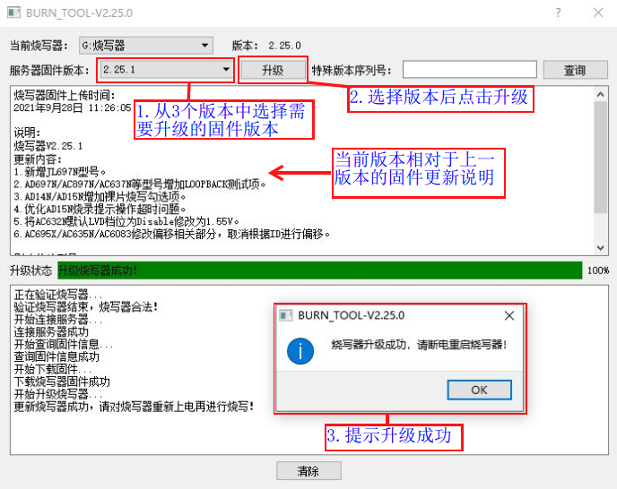
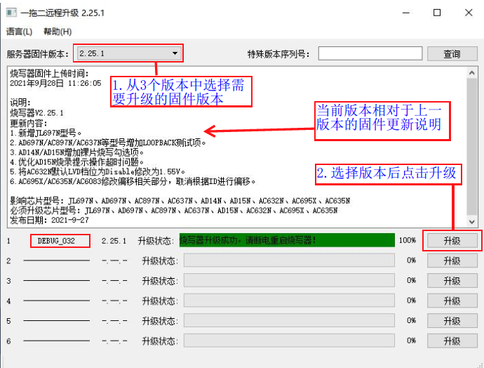

1.4. 远程升级烧录器固件
1.4.1. 升级说明
一拖二烧录器固件是指控制整个烧录器工作的主控芯片固件程序。
烧录器固件可以通过PC工具burn_tool.exe操作进行远程升级。
升级工具可选择最新的3个正式版本固件进行升级，同时支持升级根据实际应用和客户需要制作的特殊版本烧录器固件。
烧录器固件会根据实际情况不定时进行优化升级，进行增加功能、性能优化、问题修复等。正常情况下务必及时升级到最新版本，否则可能出现一些烧录问题。
1.4.2. 正式版本固件升级
打开远程升级控制界面，有两种方法打开。
方法一：一台PC只支持升级1台烧录器
方法二：一台PC支持同时升级6台烧录器
1.4.2.1. 方法一：一台PC只支持升级1台烧录器
参考《打开部署程序界面》章节，打开更新程序的界面后如打开远程升级界面步骤所示：
【1】点击“设备”；
【2】点击“远程升级”，打开远程升级控制界面，会出现如图方法一远程升级操作说明所示远程升级界面；

打开远程升级界面步骤
如方法一远程升级操作说明所示：
【1】选择要升级的烧录器固件版本
【2】点击“升级”
【3】升级成功后，对烧录器重新上电（拔出烧录器端的USB数据线，并对”电源总开关“进行按下关闭再按下打开操作）;
【4】重新上电后，显示屏提示“无烧写文件!”，参考《部署目标芯片程序到烧录器》部署sdk编译生成的.fw、.ufw或.key文件到烧录器后即可执行程序离线烧录;

方法一远程升级操作说明
1.4.2.2. 方法二：一台PC支持同时升级6台烧录器
参考《打开部署程序界面》章节的操作步骤【3】鼠标右键打开“CD 驱动器”光驱，会看到
burn_tool.exe可执行文件，只把burn_tool.exe可执行文件复制一份到PC其它路径备份Note
注意，只需要拷贝
burn_tool.exe，不要拷贝别的文件，否则可能会无法升级烧录器上电后使用USB线进行“烧录器和PC端连接”（也可不上电直接连接USB线），让烧录器进入“PC模式”（一台PC可以同时通过不同的USB接口连接6台烧录器，USB接口不够可通过USB扩展器进行连接）；
双击备份的
burn_tool.exe，打开远程升级控制界面，如图方法二远程升级操作说明所示：【1】选择要升级的烧录器固件版本
【2】在对应检测到烧录器连接上的通道，点击“升级”（支持6台在线的烧录器同时升级）

方法二远程升级操作说明
所有升级的通道升级成功后，可对烧录器重新上电（拔出烧录器端的USB数据线，并对”电源总开关“进行按下关闭再按下打开）;
重新上电后，显示屏提示“无烧写文件!”，参考《部署目标芯片程序到烧录器》部署sdk编译生成的.fw、.ufw或.key文件到烧录器后即可执行程序离线烧录;
1.4.3. 特殊版本固件升级
特殊版本升级同《正式版本固件升级》的正式版本升级流程基本一致，主要区别是特殊版本升级需要输入特殊版本序列号。
如图远程升级特殊版本操作说明所示：
【1】输入要升级的特殊版本序列号;
【2】点击查询，查询到对应的特殊版本;
【3】点击升级，升级成功后，对烧录器重新上电（拔出烧录器端的USB数据线，并对”电源总开关“进行按下关闭再按下打开操作）;
【4】重新上电后，显示屏提示“无烧写文件!”，参考《部署目标芯片程序到烧录器》部署sdk编译生成的.fw、.ufw或.key文件到烧录器后即可执行程序离线烧录;

远程升级特殊版本操作说明